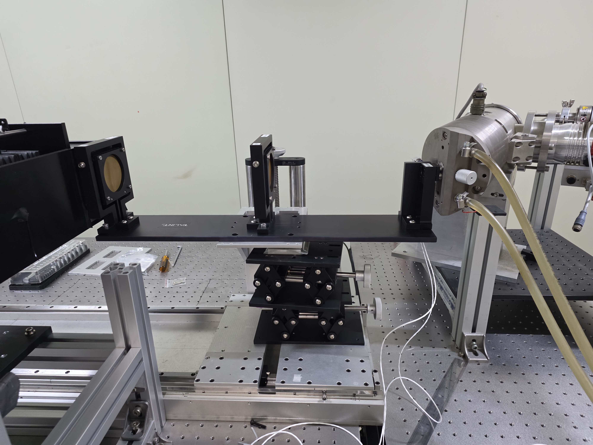

연구 장비 상세 소개
고사양 워크스테이션
본 연구실은 딥러닝 모델 학습과 대규모 데이터 분석을 위해 NVIDIA 지포스 RTX 5090 32GB 그래픽 카드 2개와 총 128GB의 서버용 RAM을 탑재한 고사양 워크스테이션을 운용하고 있습니다. 이 강력한 컴퓨팅 환경은 연구의 효율성을 극대화합니다.

X선 회절 간섭계 장비(talint edu)
talint edu는 X선 회절 간섭계를 활용하여 물질의 미세 구조를 비파괴적으로 분석하는 데 사용되는 핵심 장비입니다. 고해상도 영상 획득을 통해 재료 과학 및 의료 영상 연구에 기여합니다.
